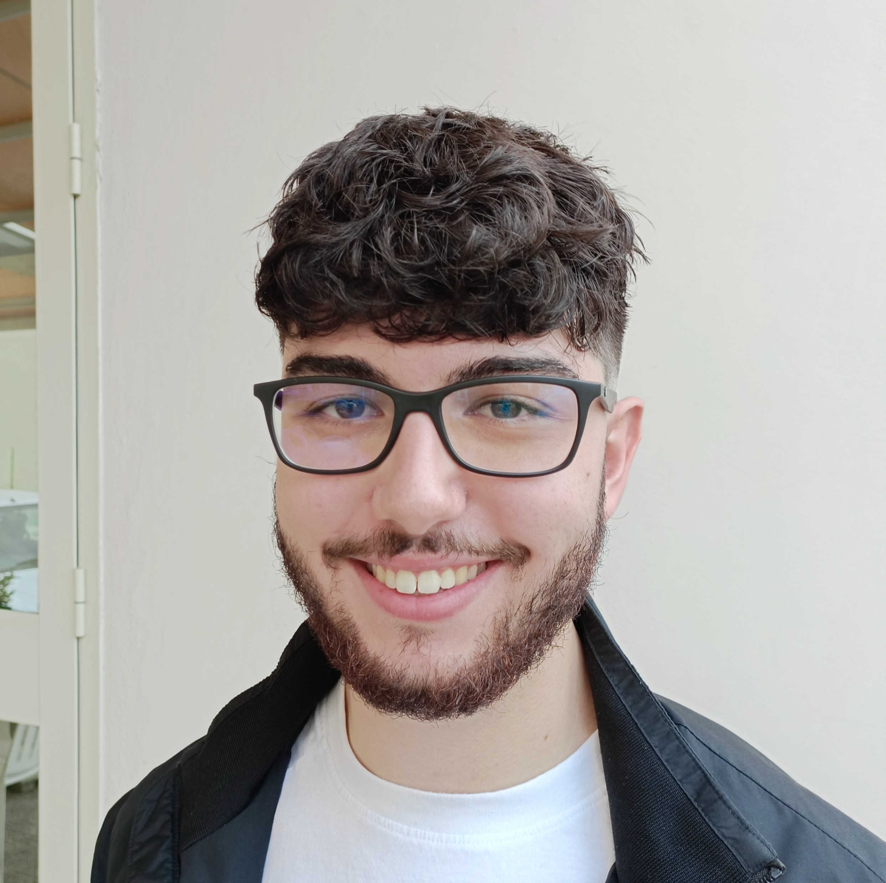

Chi sono
Appassionato di tecnologia, ho completato gli studi presso l’ITT Sangallo con un percorso incentrato soprattutto sullo sviluppo software e sul web. Ho lavorato con diversi linguaggi di programmazione e tecnologie per applicazioni e siti web, mantenendo sempre un approccio pratico e orientato alla risoluzione dei problemi.

Profilo
Sono Gabriele Scucchia, diplomato in Informatica e Telecomunicazioni. Mi piace affrontare problemi tecnici in modo pratico, imparando velocemente da ogni esperienza, sia a scuola che nei tirocini.
Nel tempo libero seguo gaming e motori: passioni che mi aiutano a rimanere aggiornato sulle nuove tecnologie e a sviluppare creatività e attenzione ai dettagli.
Dati principali
- Nome: Gabriele Scucchia
- Data di nascita: 24/02/2007
- Nazionalità: Italiana
- Email: gabrielescucchia@gmail.com
- Telefono: +39 331 281 354
- CV (PDF)
Istruzione e formazione
Ho conseguito il diploma di Perito Tecnico in Informatica e Telecomunicazioni presso l’Istituto Tecnico Tecnologico "Allievi-Sangallo" di Terni. Il percorso scolastico, fortemente orientato alla pratica laboratoriale, mi ha fornito solide basi nello sviluppo del software e nella gestione di infrastrutture IT:
- Sviluppo Software: programmazione orientata agli oggetti, strutture dati e logica algoritmica (Java, C, C++, Python).
- Sviluppo Web & Database: architetture web (frontend e backend) e modellazione dati con MySQL.
- Sistemi e Reti: architettura dei calcolatori, sistemi operativi e configurazione di reti locali e protocolli.
- Metodologia e Progettazione: analisi dei requisiti, problem solving e sviluppo di progetti in team.
Dettagli titolo di studio
- Titolo: Perito in Informatica e Telecomunicazioni
- Istituto: ITT "Allievi-Sangallo"
- Sede: Viale C. Battisti, 131, 05100 Terni (TR)
- Periodo: 2020 – 2025
- Voto finale: 91/100
- Classificazione: Livello 4 EQF
- Certificato di diploma (PDF)
- Sito dell’istituto
Esperienza lavorativa (tirocini)
Queste esperienze di tirocinio hanno affiancato il mio percorso di studi orientato al software, permettendomi di applicare concretamente le competenze acquisite a scuola, apprendere nuove metodologie operative e confrontarmi con problematiche tecniche reali.
Studente tirocinante – Tecnico informatico
R.PC - Soluzioni Informatiche – Narni Scalo (TR)
15/01/2024 – 27/01/2024
Supporto tecnico con focus su installazione e configurazione di software
e sistemi operativi, affiancato da attività di manutenzione di PC,
notebook, tablet e telefoni, diagnosi di problemi e supporto nella
gestione dei clienti.
Studente tirocinante – Tecnico informatico
R.PC - Soluzioni Informatiche – Narni Scalo (TR)
03/06/2024 – 22/06/2024
Prosecuzione delle attività di assistenza tecnica, con particolare
attenzione alla configurazione software, all'assistenza a domicilio e al contatto con i clienti.
Studente tirocinante – Tecnico informatico
BGA Rework – Terni (TR)
16/09/2024 – 28/09/2024
Supporto tecnico con attività più vicine all’hardware (diagnosi e
riparazione, reballing, utilizzo di strumenti di laboratorio).
Competenze tecniche
Il mio percorso è principalmente incentrato sul software e sullo sviluppo web; le competenze legate all’hardware derivano soprattutto dalle esperienze di tirocinio.
- Sviluppo software con diversi linguaggi.
- Sviluppo web (frontend e backend) e gestione database (es. MySQL).
- Progettazione di reti, conoscenza di protocolli e sicurezza di base.
Strumenti e linguaggi
Lingue
- Italiano: madrelingua
- Inglese: livello B1 (ascolto, lettura, produzione e interazione orale, scrittura)
Altre informazioni
Patenti di guida: AM, A1, B1, B.
Autorizzo il trattamento dei dati personali ai sensi dell’art. 13 d. lgs. 196/2003
e dell’art. 13 GDPR 679/16.